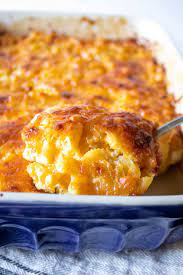

Mac N Cheese

Decsription
Nothing says comofort food like an amazing batch of warm, gooey, macaroni and cheese!
From the noodles to the creamy cheese sauce to the lightly browned top, it all comes together to make this homestyle favorite.
Below you will find the directions to create your version of this classic.
Ingredients
- 4 c. dried macaroni
- 1/4 c. salted butter
- 1/4 c. all purpose flour
- 2 1/2 c. whole milk
- 1 tsp. dry mustard
- 1 lb. cheese (I use a combination of sharp cheddar and colby jack), grated by hand, do not use pre grated
- 1/2 tsp. salt, more to tatse
- 1/2 tsp black pepper
- 1 tsp. smoked paprika
- 1/2 tsp seasoned salt, more to taste
Steps
- Cook the pasta until firm. Drain.
- In a large pot, melt the butter and sprinkle in the flour.
Whisk together over medium-low heat. Cook for a couple minutes, whisking constantly so that it does not burn.
- Next, start adding the milk in increments, whisking to as smooth as possible after each addition.
Add the mustard and cook for about 5 minutes or until very thick.
- Add in the cheese and stir to melt. Add the salt, seasoned salt, pepper, and paprika.
Taste the sauce and add more salt and seasoned salt as needed.
- Pour in the drained, cooked macaroni and stir to combine.
Pour this mixture into a buttered baking dish and bake at 350 for 20 to 25 minutes until it is bubbly and golden on top.